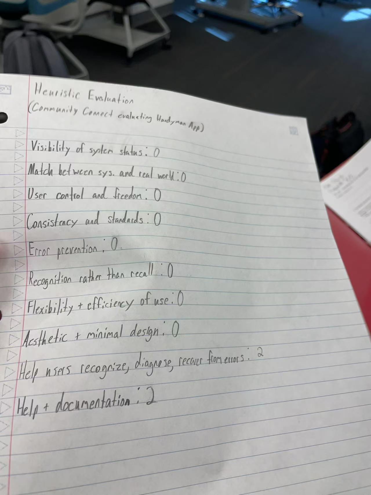

Connecting Homeowners and Contractors Seamlessly
The Handyman App is a human-centered platform designed to solve communication gaps and improve project management between homeowners and independent contractors. Many homeowners face difficulty finding reliable service providers, while contractors often struggle with workflow organization and client interaction. This project bridges that gap with a streamlined, intuitive application.
The goal of the Handyman App is to create a trustworthy, intuitive, and accessible system that simplifies contractor discovery, project tracking, and communication. Key features include advanced search filters based on skill, pricing, and reviews; a contractor dashboard to manage projects and availability; and real-time messaging and updates.
Our design process followed a human-centered approach involving contextual inquiries, user interviews, and competitive analysis. Storyboards, journey maps, and personas were created to understand user pain points. We iteratively refined the interface based on feedback, focusing on simplicity, transparency, and trust-building features like credential verification and project timelines.
Maria is a 57-year-old retired school teacher who owns her home and occasionally needs professional help with repairs and renovations. Although she uses a smartphone regularly, she is not very confident with complex apps or new technology. Maria’s primary concerns are finding trustworthy contractors, clearly understanding pricing, and ensuring that she can track the project’s progress without having to make repeated calls. She prefers a platform that is simple, transparent, and offers easy communication without technical jargon.
David is a 38-year-old independent contractor specializing in home improvement projects. He manages several ongoing jobs simultaneously but lacks an administrative assistant. David needs a mobile-friendly solution that helps him manage projects, update progress, and communicate with clients efficiently, all while on the go. His focus is on minimizing scheduling conflicts, providing professional updates to clients, and building a strong reputation for repeat business.
High-fidelity prototypes were developed initially using Figma, refining the three major tasks: contractor searching, project tracking, and availability management. Visual feedback was emphasized with progress bars, calendar integrations, and clear notification systems. Later the team found out that Figma did not function as well as intended, so we switched to flutter. The designs aimed for accessibility, ensuring easy navigation for both tech-savvy and non-tech-savvy users.
Figure: Storyboard visualizing contractor discovery and project management. The pages for three major functions.
A heuristic evaluation was conducted using Nielsen's principles. Issues identified included limited error recovery options and lack of in-app help/documentation. Severity ratings were assigned, and solutions were applied: clear error messages, input validations, and tooltips for key features. Post-evaluation updates enhanced usability significantly, reducing potential user confusion.
Throughout the design process, we learned the importance of continuous user testing and iterative refinement. The project's focus on usability and transparency addressed critical user needs. Moving forward, additional improvements could include AI-powered contractor recommendations and a dynamic pricing estimator for clients.